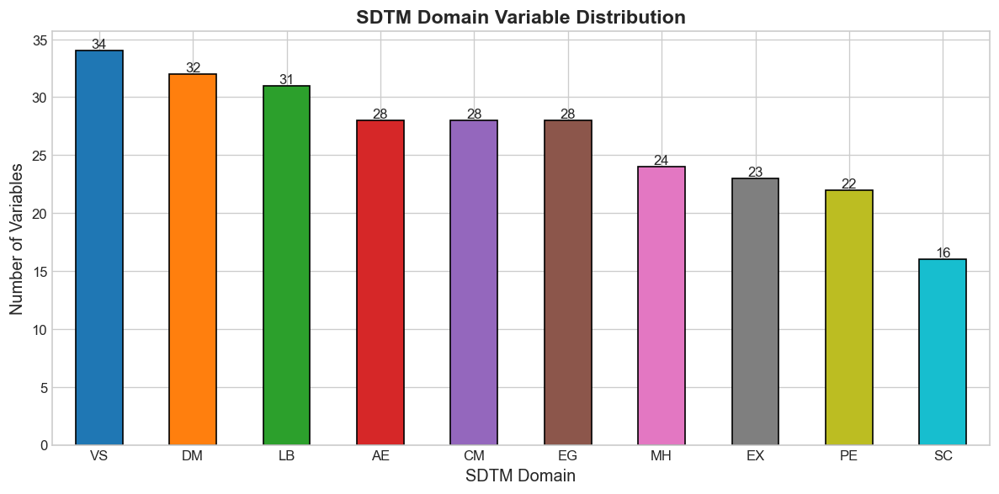
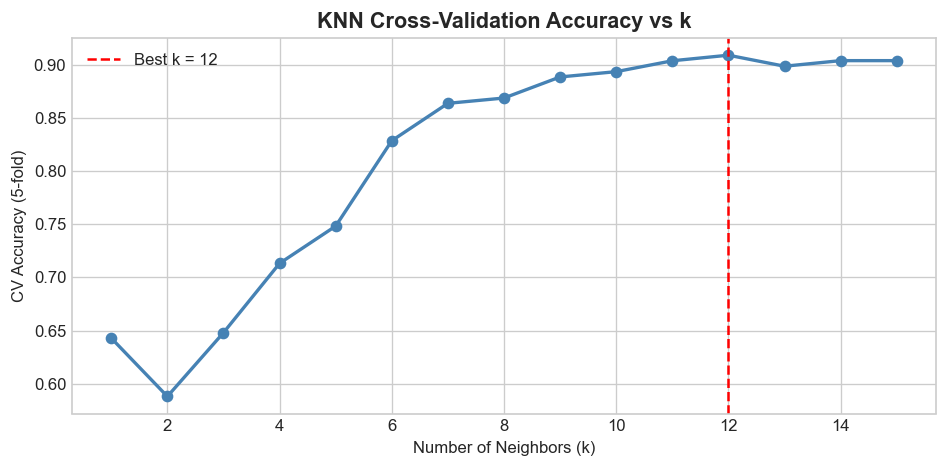

print("=== Data Types ===")print(df.dtypes)print("\n=== Missing Values ===")print(df.isnull().sum())print("\n=== Domain Distribution ===")domain_counts = df['domain'].value_counts()print(domain_counts)# Plot domain distributionfig, ax = plt.subplots(figsize=(10, 5))domain_counts.plot(kind='bar', ax=ax, color=sns.color_palette('tab10', len(domain_counts)), edgecolor='black')ax.set_title('SDTM Domain Variable Distribution', fontsize=14, fontweight='bold')ax.set_xlabel('SDTM Domain', fontsize=12)ax.set_ylabel('Number of Variables', fontsize=12)ax.tick_params(axis='x', rotation=0)for bar in ax.patches: ax.annotate(f'{int(bar.get_height())}', xy=(bar.get_x() + bar.get_width() /2, bar.get_height()), ha='center', va='bottom', fontsize=10)plt.tight_layout()plt.show()
=== Data Types ===
variable_name str
variable_label str
domain str
dtype: object
=== Missing Values ===
variable_name 0
variable_label 0
domain 0
dtype: int64
=== Domain Distribution ===
domain
VS 34
DM 32
LB 31
AE 28
CM 28
EG 28
MH 24
EX 23
PE 22
SC 16
Name: count, dtype: int64

3. Data Preprocessing and Label Encoding
# Drop rows with missing values (none expected, but defensive)df_clean = df.dropna().copy()print(f"Records after cleaning: {len(df_clean)}")# Encode target labels (domain) with LabelEncoderle = LabelEncoder()df_clean['domain_encoded'] = le.fit_transform(df_clean['domain'])# Display mappinglabel_map =dict(zip(le.classes_, le.transform(le.classes_)))print("\n=== Domain → Encoded Label Mapping ===")for domain, code insorted(label_map.items()):print(f" {domain:5s} → {code}")
Records after cleaning: 266
=== Domain → Encoded Label Mapping ===
AE → 0
CM → 1
DM → 2
EG → 3
EX → 4
LB → 5
MH → 6
PE → 7
SC → 8
VS → 9
4. Feature Engineering from Labels
We combine the variable_name and variable_label text, then apply TF-IDF vectorization to create numeric features.
TF-IDF captures term importance across documents (labels), making it an effective feature for text-based classification.
# Combine variable_name + variable_label as the text corpus for each recorddf_clean['text'] = df_clean['variable_name'].str.lower() +' '+ df_clean['variable_label'].str.lower()# TF-IDF Vectorization (unigrams + bigrams, max 200 features)tfidf = TfidfVectorizer( ngram_range=(1, 2), max_features=200, sublinear_tf=True, stop_words='english')X = tfidf.fit_transform(df_clean['text']).toarray()y = df_clean['domain_encoded'].valuesprint(f"Feature matrix shape : {X.shape}")print(f"Target vector shape : {y.shape}")print(f"Number of classes : {len(le.classes_)}")print(f"Classes : {list(le.classes_)}")# Show top TF-IDF featuresfeature_names = tfidf.get_feature_names_out()print(f"\nSample TF-IDF features: {feature_names[:20]}")
X_train, X_test, y_train, y_test = train_test_split( X, y, test_size=0.25, random_state=42, stratify=y # keep class proportions balanced in both splits)print(f"Training set : {X_train.shape[0]} samples ({X_train.shape[0]/len(X)*100:.0f}%)")print(f"Test set : {X_test.shape[0]} samples ({X_test.shape[0]/len(X)*100:.0f}%)")# Class distribution in each splittrain_dist = pd.Series(y_train).map(dict(enumerate(le.classes_))).value_counts().sort_index()test_dist = pd.Series(y_test).map(dict(enumerate(le.classes_))).value_counts().sort_index()split_df = pd.DataFrame({'Train': train_dist, 'Test': test_dist})print("\n=== Class Distribution per Split ===")print(split_df)
Training set : 199 samples (75%)
Test set : 67 samples (25%)
=== Class Distribution per Split ===
Train Test
AE 21 7
CM 21 7
DM 24 8
EG 21 7
EX 17 6
LB 23 8
MH 18 6
PE 17 5
SC 12 4
VS 25 9
6. Train KNN Model
We use cross-validation over a range of k values to select the optimal number of neighbors.
# Tune k via cross-validation on training datak_range =range(1, 16)cv_scores = []for k in k_range: knn_cv = KNeighborsClassifier(n_neighbors=k, metric='cosine') scores = cross_val_score(knn_cv, X_train, y_train, cv=5, scoring='accuracy') cv_scores.append(scores.mean())best_k = k_range[np.argmax(cv_scores)]print(f"Best k = {best_k} (CV accuracy = {max(cv_scores):.4f})")# Plot CV accuracy vs kfig, ax = plt.subplots(figsize=(8, 4))ax.plot(list(k_range), cv_scores, marker='o', linewidth=2, color='steelblue')ax.axvline(best_k, color='red', linestyle='--', label=f'Best k = {best_k}')ax.set_title('KNN Cross-Validation Accuracy vs k', fontsize=13, fontweight='bold')ax.set_xlabel('Number of Neighbors (k)')ax.set_ylabel('CV Accuracy (5-fold)')ax.legend()plt.tight_layout()plt.show()# Train final KNN with best kknn = KNeighborsClassifier(n_neighbors=best_k, metric='cosine')knn.fit(X_train, y_train)print(f"\nKNN model trained with k={best_k}, metric='cosine'")
Best k = 12 (CV accuracy = 0.9096)

KNN model trained with k=12, metric='cosine'
7. Train CART Model
CART (Classification and Regression Trees) uses the Gini impurity criterion.
We tune max_depth and min_samples_split via cross-validation.
Top 10 most discriminative TF-IDF tokens:
feature importance
vital 0.136588
ecg 0.116916
adverse 0.116663
medication 0.116266
laboratory 0.110359
history 0.100989
exposure 0.098847
physical 0.097167
characteristics 0.085509
lab 0.020697
Summary
KNN
CART
Algorithm
Instance-based (lazy)
Rule-based tree (eager)
Hyper-parameter tuned
k (neighbors)
max_depth, min_samples_split
Interpretable?
No
Yes (tree structure)
Feature insight
No
Yes (Gini importances)
Key observations: - KNN performs well on text features (cosine distance is effective for TF-IDF vectors) but is sensitive to the choice of k. - CART produces an explicit decision tree making it easier to audit which tokens drive which domain predictions — important in a clinical/SDTM context. - Both models benefit from the combined variable_name + variable_label text feature as domain-specific keywords (e.g., adverse, laboratory, vital) are highly discriminative.